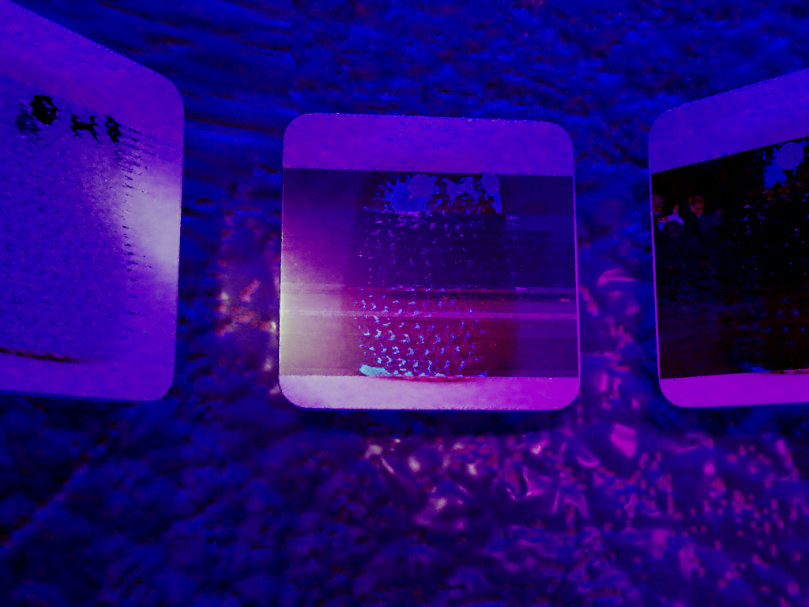
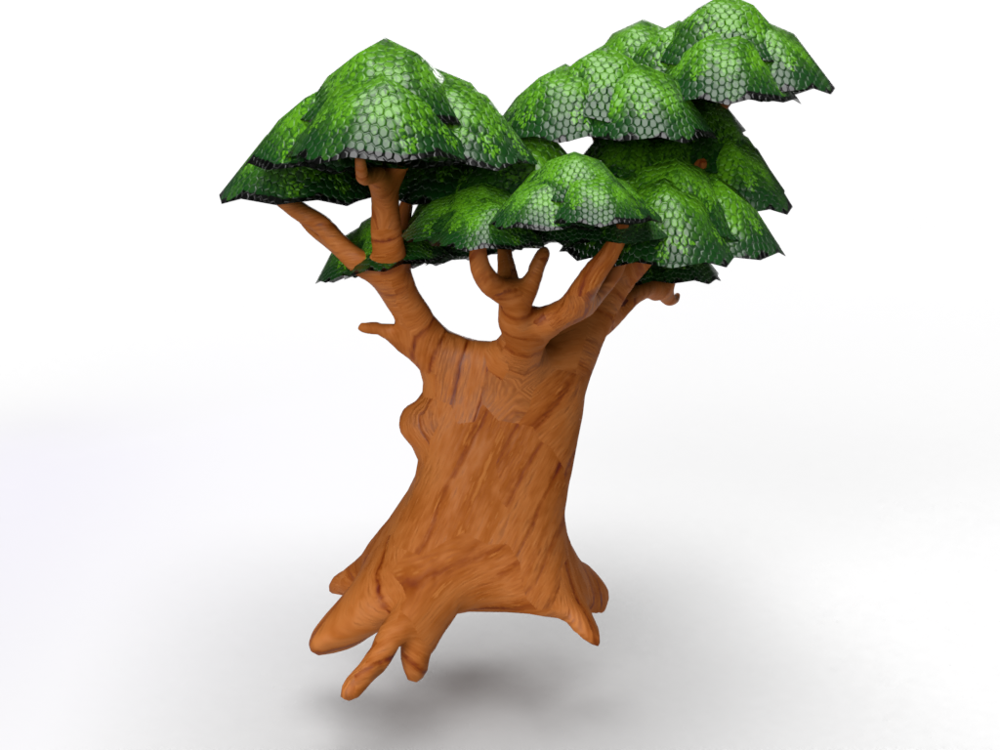
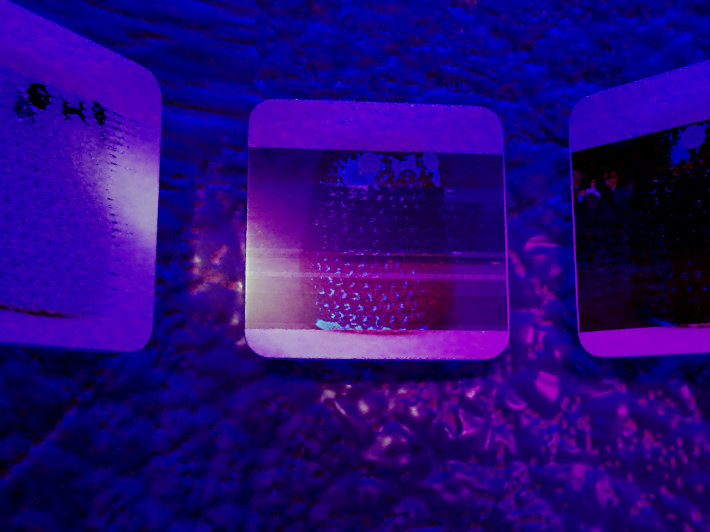
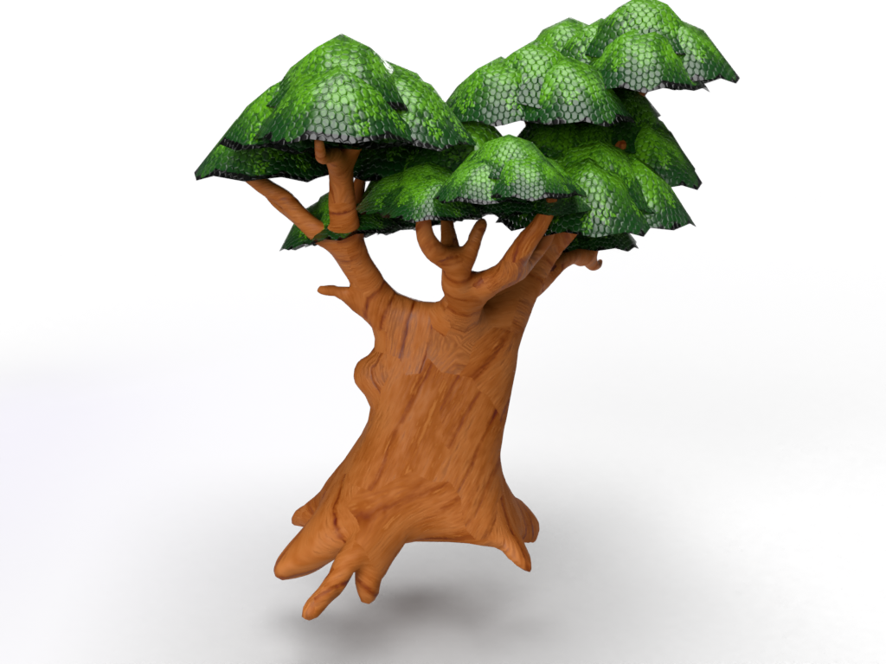

Our museum, Into a New Reality, is a gallery of overall magical themes. Being shaped similarely to an observatory, it my come off as intimidating dur to it being tucked deep into a dark forest. Once inside, you realize you are now in a place of tranquility and whimsy, a place where the darkness of the forest cannot reach. We wanted to create a space of fantasy and wonder, while keeping a calm and peaceful atmosphere.